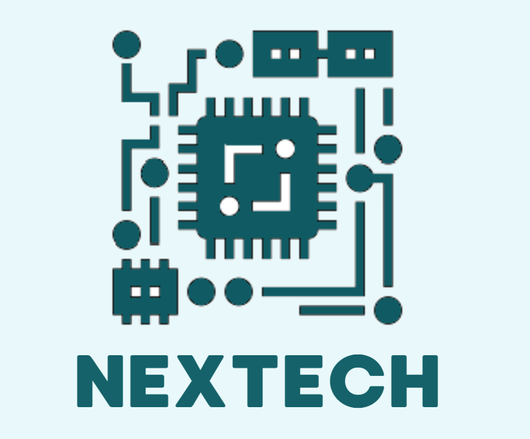

Bienvenidos a NexTech
Nuestra empresa se dedica a proporcionar soluciones tecnológicas avanzadas. Desde nuestra fundación, hemos trabajado incansablemente para innovar y ofrecer productos que no solo satisfacen las necesidades actuales del mercado, sino que también anticipan las futuras demandas. Nuestro equipo de expertos está comprometido con la excelencia y la mejora continua, asegurando que cada solución que ofrecemos esté a la vanguardia de la tecnología. Además, creemos firmemente en la importancia de la sostenibilidad y la responsabilidad social, por lo que todas nuestras operaciones están diseñadas para minimizar el impacto ambiental y contribuir positivamente a la comunidad.